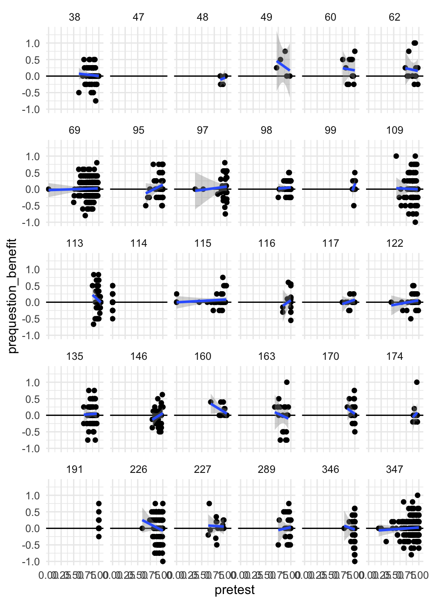

ManyClasses 2 Analysis
Raw data visualization
Overall Model
This model is score | trials(trials) ~ condition + (0 + condition | course_id) + (1 | course_id/participant_id). A fixed effect of condition (prequestions vs. control) and a random effect of condition per class, and random intercept of participant , nested in random intercept of class.

Moderators
Exposure order
Note taking for myself: the idea here is that there are different assignments in each class, and exposure order is basically which assignment people got. So wouldn’t we expect 0 fixed effect, since there’s no reason to expect the first assignments to be systematically different from the second assignments across classes? Should this be a random class-level effect?

Class Level
Number of Assignments
Estimate Est.Error
Intercept 1.138706685 0.254626851
conditionprequestions 0.265771789 0.101591799
nbr_other_assessments -0.002586230 0.010345856
conditionprequestions:nbr_other_assessments -0.001300227 0.003512777
Q2.5 Q97.5
Intercept 0.642557931 1.639667153
conditionprequestions 0.077080285 0.474789012
nbr_other_assessments -0.022244302 0.018455579
conditionprequestions:nbr_other_assessments -0.007817892 0.006104962Student Level
Grade Level
Question about this one: we can’t nest this in classes, right? Because there are classes with all one grade level? And we’re more interested in how this behaves at the class level?
Estimate Est.Error Q2.5 Q97.5
Intercept 0.56710559 0.58613231 -0.58634937 1.68567082
conditionprequestions 0.06800658 0.29917245 -0.52398144 0.67313982
level 0.04359620 0.04321148 -0.03858993 0.12791178
conditionprequestions:level 0.01210446 0.02242373 -0.03120560 0.05849032Pretest
Note: We get a warning that NAs are excluded.
Estimate Est.Error Q2.5 Q97.5
Intercept -1.14267334 0.4616147 -2.0896466 -0.2638754
conditionprequestions -0.09147072 0.2753749 -0.6376390 0.4428374
pretest 2.54066635 0.4589428 1.6810986 3.4808578
conditionprequestions:pretest 0.38163862 0.3128153 -0.2144405 1.0011360Plot the student-level prequestion effect by student-level pretest
`geom_smooth()` using formula = 'y ~ x'Warning: Removed 5 rows containing non-finite outside the scale range
(`stat_smooth()`).Warning: Removed 5 rows containing missing values or values outside the scale range
(`geom_point()`).

In Major
Estimate Est.Error Q2.5 Q97.5
Intercept 1.05983145 0.20948315 0.64765404 1.4686427
conditionprequestions 0.20811816 0.09319701 0.04078662 0.4093480
in_major 0.11579498 0.16686590 -0.21799814 0.4386215
conditionprequestions:in_major 0.06622255 0.14257762 -0.20263712 0.3580761Prequestion Score
Question: what does it mean to get prequestion score in control condition
Estimate Est.Error Q2.5
Intercept 0.9272632 0.2090636 0.5205645
conditionprequestions -0.2030010 0.1077540 -0.4014074
prequestion_score 0.2850007 0.2003186 -0.1215907
conditionprequestions:prequestion_score 0.9033898 0.1765628 0.5589993
Q97.5
Intercept 1.34218695
conditionprequestions 0.01581708
prequestion_score 0.66658043
conditionprequestions:prequestion_score 1.25695766Submission Level
Percentage of video viewed
Estimate Est.Error Q2.5 Q97.5
Intercept 0.90031462 0.1986240 0.50763041 1.2832993
conditionprequestions 0.22155470 0.1041605 0.02953640 0.4389090
viewpct 0.30757544 0.1246368 0.06670658 0.5572133
conditionprequestions:viewpct 0.03159017 0.1258317 -0.20931649 0.2869207Did the student start the video at all?
Estimate Est.Error Q2.5
Intercept 0.9686228 0.2095973 0.5599368
conditionprequestions 0.1338766 0.1234850 -0.1020641
initiate_playback 0.1650970 0.1448756 -0.1254721
conditionprequestions:initiate_playback 0.1525935 0.1470207 -0.1277152
Q97.5
Intercept 1.3836058
conditionprequestions 0.3856911
initiate_playback 0.4492441
conditionprequestions:initiate_playback 0.4416383N Events (clicks?)
Estimate Est.Error Q2.5 Q97.5
Intercept 0.885500514 0.190797030 0.51434510 1.26220129
conditionprequestions 0.294698159 0.111393457 0.09305392 0.52739623
nevents 0.022996581 0.006799869 0.01040456 0.03738852
conditionprequestions:nevents -0.001029318 0.008220684 -0.01690803 0.01575314Duration
This model won’t run.
Submission time
Estimate Est.Error
Intercept 1.13131817 0.20325563
conditionprequestions 0.17371145 0.09338948
submDaysBeforeDueDate -0.01529796 0.03309903
conditionprequestions:submDaysBeforeDueDate 0.03293765 0.02998388
Q2.5 Q97.5
Intercept 0.7337528365 1.53404384
conditionprequestions 0.0001490634 0.37213236
submDaysBeforeDueDate -0.0830773079 0.04858057
conditionprequestions:submDaysBeforeDueDate -0.0204887743 0.09837408Exposure Level
Current thinking about model structure: we don’t have enough different exposures in each class to get class-level estimates of the exposure-level moderators. I’m including intercepts for courses and participants, as well as exposure-level slopes are condition effects within classes. The moderator is then estimated only at the population level. Theoretically I think we’d expect these to vary across classes or even across individuals, but I don’t think we have the data to fit that kind of model.
delay: days between assignment due date and exam date
Estimate Est.Error Q2.5 Q97.5
Intercept 1.053860387 0.259866772 0.55869352 1.57076772
conditionprequestions 0.134899722 0.116782753 -0.08225814 0.38055361
delay 0.007776949 0.015392246 -0.02219653 0.03830752
conditionprequestions:delay 0.011144282 0.008252656 -0.00540479 0.02706361pct_correct: overall percent correct on the exam items
Estimate Est.Error Q2.5 Q97.5
Intercept -3.21109880 0.2070404 -3.6231295 -2.8026960
conditionprequestions 0.21772559 0.2754758 -0.3088558 0.7895353
pct_correct 6.11926114 0.2934307 5.5483412 6.7009616
conditionprequestions:pct_correct 0.02439812 0.3911912 -0.7822728 0.7747773submDaysBeforeDueDate: Number of days before the due date that the assignment was first completed
Can’t find this one?
video_length: total duration of video
Estimate Est.Error Q2.5
Intercept 1.2407995823 0.936463415 -0.570704939
conditionprequestions 0.5096949153 0.477501549 -0.393603214
video_length -0.0004311682 0.003371330 -0.007120887
conditionprequestions:video_length -0.0009230310 0.001696703 -0.004420019
Q97.5
Intercept 3.09451845
conditionprequestions 1.47792277
video_length 0.00602111
conditionprequestions:video_length 0.00231416avg_time_of_prequestions: avg percent of the video elapsed when prequestions are addressed
Estimate Est.Error
Intercept 0.777722313 0.359352494
conditionprequestions 0.115671530 0.206291595
avg_time_of_prequestions 0.002029103 0.002126241
conditionprequestions:avg_time_of_prequestions 0.001441178 0.001607646
Q2.5 Q97.5
Intercept 0.063882012 1.465555108
conditionprequestions -0.277869634 0.533270010
avg_time_of_prequestions -0.002469685 0.006098455
conditionprequestions:avg_time_of_prequestions -0.001742305 0.004591207time_answering_preqs: cumulative time spent addressing prequestions in video
Estimate Est.Error
Intercept 1.0362374190 0.2554176787
conditionprequestions 0.1967982975 0.1226744551
time_answering_preqs 0.0007402721 0.0010966017
conditionprequestions:time_answering_preqs 0.0004149327 0.0006531831
Q2.5 Q97.5
Intercept 0.532965649 1.564462999
conditionprequestions -0.027471573 0.447436409
time_answering_preqs -0.001360563 0.003003712
conditionprequestions:time_answering_preqs -0.000896321 0.001710659answer_not_provided: was there at least one prequestion where the answer was never presented (learner needed to infer answer)
Estimate Est.Error Q2.5
Intercept 0.9967683 0.2254284 0.5556663
conditionprequestions 0.3863225 0.1026126 0.1891876
answer_not_provided 0.2771405 0.2237141 -0.1593261
conditionprequestions:answer_not_provided -0.2336285 0.1346954 -0.4899040
Q97.5
Intercept 1.44115627
conditionprequestions 0.60086447
answer_not_provided 0.70608303
conditionprequestions:answer_not_provided 0.04325556require_memorization: Does any prequestion involve memorization of a word/term/phrase?
Estimate Est.Error Q2.5
Intercept 1.0843210 0.21166843 0.65803078
conditionprequestions 0.2371520 0.07765417 0.09752128
require_memorization 0.7469446 0.87307554 -0.95971556
conditionprequestions:require_memorization 0.5807440 0.46192121 -0.27991764
Q97.5
Intercept 1.5002462
conditionprequestions 0.4016745
require_memorization 2.5226223
conditionprequestions:require_memorization 1.5012307preq_difficulty: percent correct (overall) on the prequestions associated with the video
Estimate Est.Error Q2.5
Intercept 0.3438939 0.3884596 -0.411309074
conditionprequestions 0.4811758 0.2598282 -0.002194067
preq_difficulty 1.5159664 0.6423771 0.225769728
conditionprequestions:preq_difficulty -0.4199715 0.4652783 -1.360869976
Q97.5
Intercept 1.0997589
conditionprequestions 1.0003168
preq_difficulty 2.7656987
conditionprequestions:preq_difficulty 0.4595918notes / misc
ben questions
priors for model?
exposure order moderator
moderators as main effects or interactions or both?
Fit class-level moderators using the model above, replacing exposure_order with class-level moderator.
Use a different model for participant-level moderators.
For assignment-level moderators, use assignment ID not nested in classes? Because there are only two assignments per class, nesting seems unhelpful. Instead allow for class-level intercept?
Also fit a model where the outcome is whether/how much of the video they watch. Whether = > 5% of the video. Prediction is that prequestions will affect whether students watch the video.
I also wrote a script to organize everything. As you know, I’ve felt uncomfortable with the piss poor documentation I provided about the ManyClasses2 moderators. So here (attached, and also in the ManyClasses 2 folder in Dropbox), you’ll find a script that grabs everything from OSF and organizes it into four different data frames:
mod_class: Moderators at the class-level (30 obs) - key is course_id
mod_exposure: Moderators at the exposure-level (60 obs; exposures are analogous to but distinct from “periods” in a repeated-measures design; in any case, here there are two “exposures” per class in this study) - keys are course_id + exposure
mod_student: Moderators at the student-level (1571 obs) - key is participant_id
mod_submission: Moderators at the level of each student’s interactions with a treatment (3142 obs; two observations per student, one for each exposure)
I hope this makes moderator analyses super-easy!
Note: Right now we only have one moderator at the class-level (the number of other graded assessments in the course). Obviously we could also do analyses on consent rate, enrollment, semester, institution, etc… But these are atheoretical, and we already understand class-level moderators to be underpowered, so I’ve not added them. If you think I should add ’em to mod_class, just let me know.
Appreciatively,
Ben